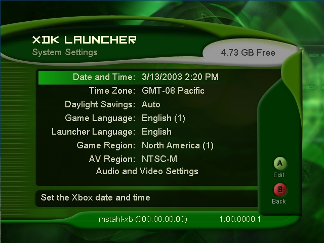
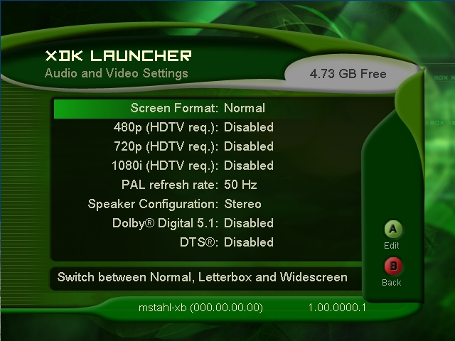

System Settings
Xbox system settings can be adjusted by selecting System Settings in the XDK Launcher Settings and Tools menu.

Illustration An image of the System Settings screen.
You can adjust the following Xbox system settings from the System Settings menu:
- Date and Time — Provides a set of controls for updating the current date and time on the Xbox. Dates in the XDK Launcher are in the format MM/DD/YYYY (month, day, year).
- Time Zone — Lists all time zones based on Greenwich Mean Time (GMT) and allows selection of appropriate local time zone.
- Daylight Savings — Enables the Xbox to adjust automatically for daylight savings time.
- Game Language — Specifies the language that the Xbox should use when displaying text in a game title. Settings include Unknown, English, Japanese, German, French, Spanish, Italian, Korean, Traditional Chinese, and Brazilian Portuguese.
Note The Game Language setting affects not just the game title language, but the Xbox Dashboard language as well. Be sure to test that titles run gracefully on an Xbox with the language set to Unknown. Because the Xbox Dashboard periodically has new languages added, your titles must remain compatible with future language additions.
- Launcher Language — Specifies the language for the Xbox to use when displaying XDK Launcher text. Settings include English and Japanese.
- Game Region — Indicates which world region to assign for the Xbox. Available settings include North America, Asia, and Rest of world.
- AV Region — Specifies the appropriate video mode for output. Available settings include NTSC-M (which includes S-video connection for non-Japanese), NTSC-J (which includes S-video connection for Japan), and PAL-I (standard PAL format). The shortcut controls for setting the AV Region are as follows: LeftTrigger+RightTrigger+D-pad, followed by D-pad up for PAL-50, D-pad left for NTSCJ, D-pad right for NTESC-M, and D-pad down for PAL-60.
- Audio and Video Settings — Navigates to the Audio and Video Settings submenu (see below).
Audio and Video Settings
The Audio and Video Settings submenu provides an easy way to alter user-configurable audio and video settings on the Xbox without navigating to the Xbox Dashboard.

Illustration An image of the Audio and Video Settings screen.
You can adjust the following Xbox audio and video settings from the Audio and Video Settings menu:
- Screen Format — Allows selection between Normal, Letterbox, and Widescreen formats.
- 480p (HDTV req.) — Enables and disables 480p for supporting games. A high-definition television (HDTV) is required when enabling this setting.
- 720p (HDTV req.) — Enables and disables 720p for supporting games. HDTV is required when enabling this setting.
- 1080i (HDTV req.) — Enables and disables 1080i for supporting games. HDTV is required when enabling this setting.
- PAL refresh rate: — Allows selection of PAL refresh rates at 50Hz and 60Hz.
- Speaker Configuration — Allows selection between Mono, Stereo, and Dolby Surround modes.
- Dolby Digital 5.1 — Enables and disables Dolby Digital 5.1.
- DTS — Enables and disables DTS.
See Also
XDK Launcher